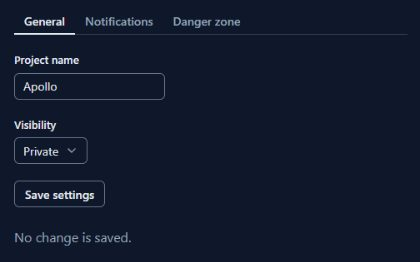
A settings page from shipped components, with a confirm dialog
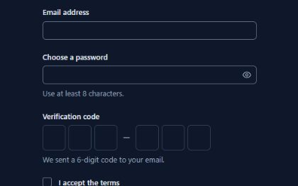
Password and one-time-code fields, which the bridge treats as secret
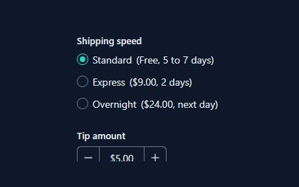
A radio group and a money field with step 0.01
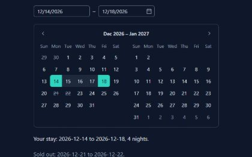
A date range in a picker and an inline month grid
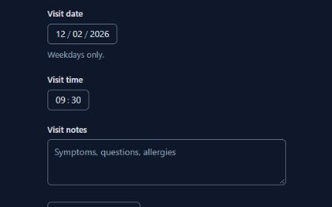
Typed date and time segments, and a notes field
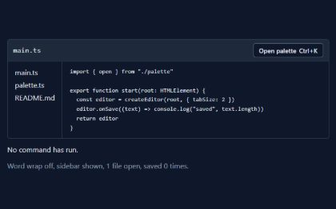
Search and run commands in a dialog
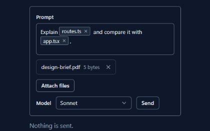
Tokens in text, an @ menu, and file attachments
Crop an image with a zoom slider and show it as an avatar
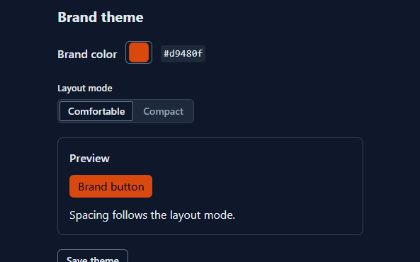
A color picker in a popover and a compact mode switch
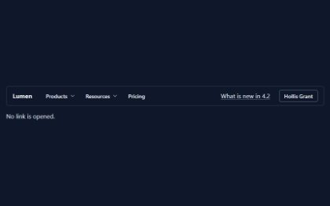
Navigation panels, a link preview and an account menu
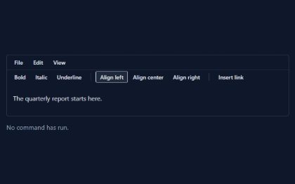
An application menu bar and a toolbar with 1 tab stop
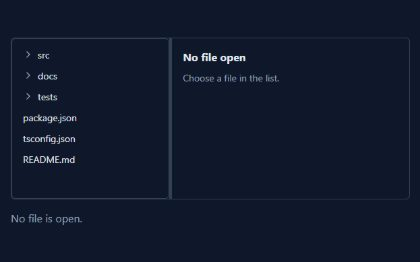
A tree in a resizable, scrollable pane
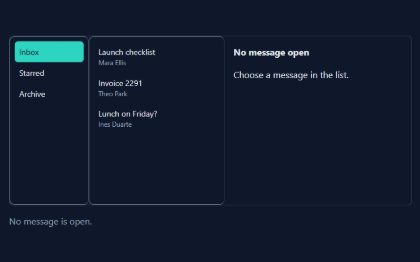
Always-visible lists that drive a reading pane
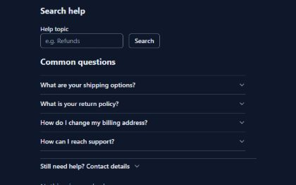
Sections that open, and free text with suggestions
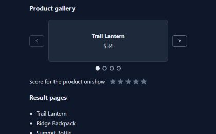
Slides, a score and result pages
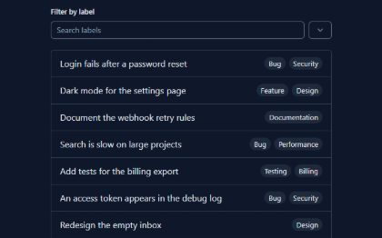
Search a list and choose several filters
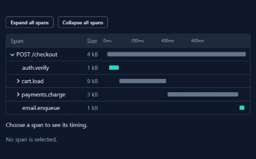
Request timings on a time axis
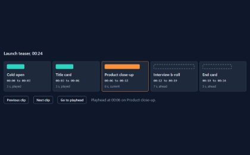
Clips on a timeline
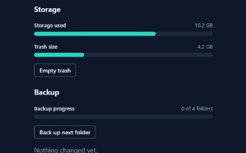
Measurements in a range and task progress
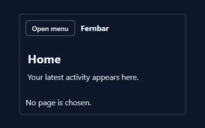
A drawer from an edge
Toasts with an action
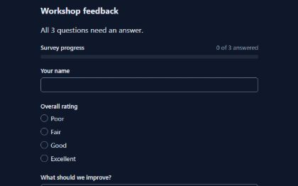
Native form submit, required-field errors and reset (docs/forms.md)
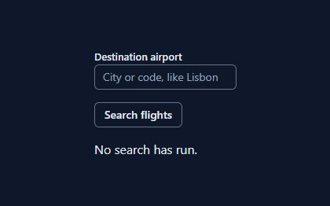
Autocomplete with options that load after a delay
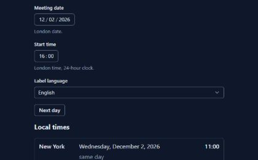
Date arithmetic and localized labels from @ui-sdk/core/date
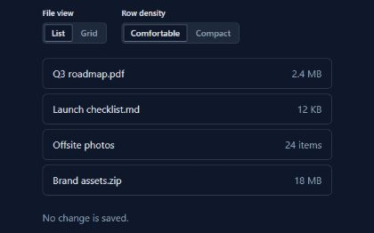
The preferences component
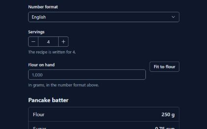
Steps, format and parse from @ui-sdk/core/number
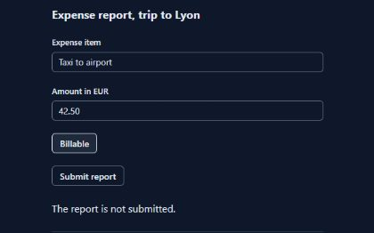
Server markup first, then the elements start (docs/server-rendering.md)
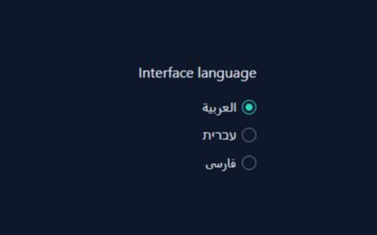
Right-to-left layout with no direction provider
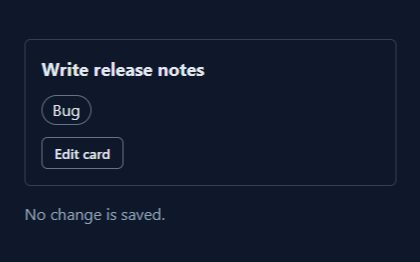
4 nested layers. Escape closes 1 layer each time.
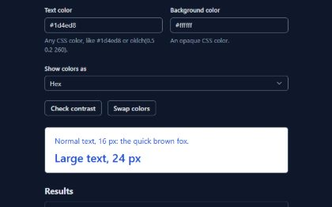
Colors as data from @ui-sdk/core/color: parse, convert, contrastRatio
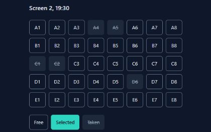
A grid of seats with 1 tab stop, taken seats that focus skips, and multiple selection
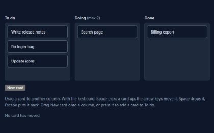
Drag cards between columns, by pointer and by keyboard
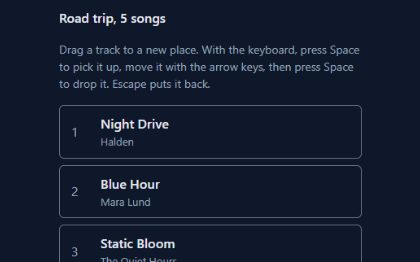
Reorder a list by drag and by keyboard
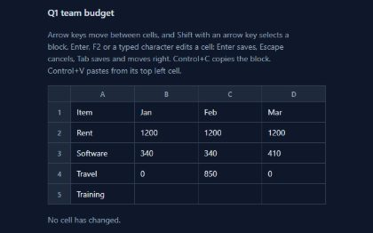
A block of cells, edit in place, copy and paste
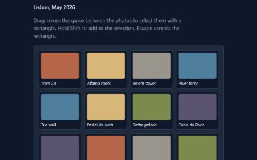
Rectangle selection
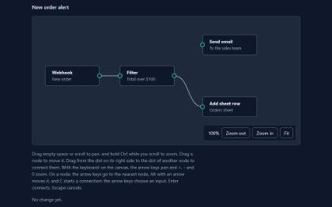
Pan and zoom a canvas, move nodes, connect ports
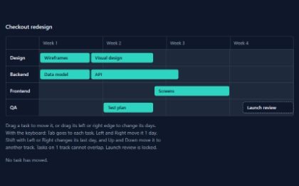
Spans on tracks that you move and resize
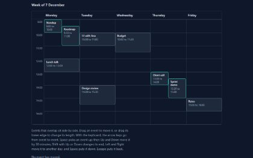
Events that overlap, placed side by side
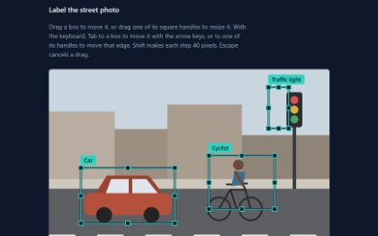
Boxes with resize handles
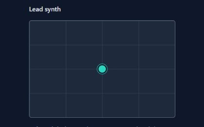
A 2-axis control
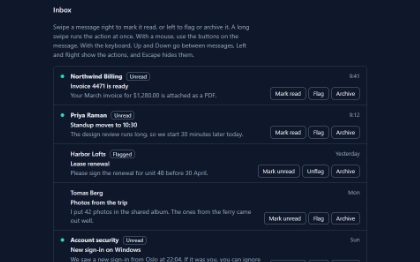
Swipe a row for actions. Buttons for a mouse.
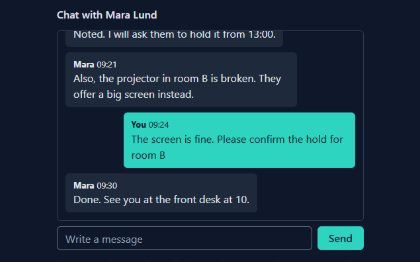
A list that stays at the bottom, and ArrowUp for earlier messages
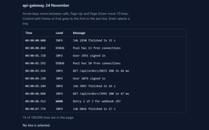
Only the visible rows are rendered
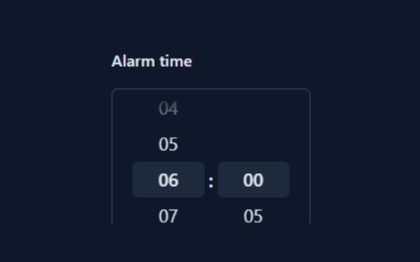
A listbox that you scroll to pick from
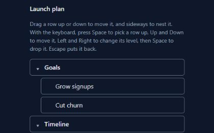
Reorder and nest tree items
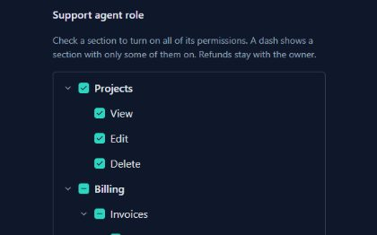
Checked, unchecked and mixed states from paths
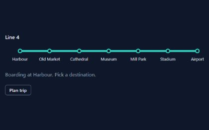
1 tab stop on a line of stations, and find a station by typing
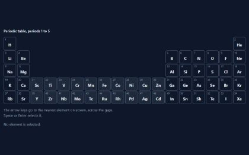
Arrow keys choose the next item from its position on screen
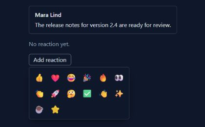
A popup with a flowing grid in it
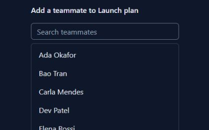
A search box over options. The website's example.
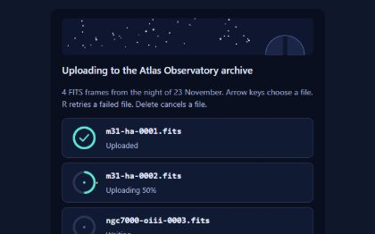
Screen reader messages
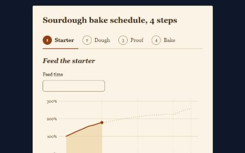
The stepper pattern of skills/ui-sdk/references/patterns.md
Press and hold to confirm
Press and hold to repeat
Focus goes to a neighbor when the focused tag leaves
Closed panels that find-in-page opens
A drag of your own, with undo and redo
A preference kept in local storage
A layer that stays over the page, and a cookie
A draft kept in session storage, committed in steps
A preview while an option has the highlight
Velocity from pointer positions
A sheet that stays above the on-screen keyboard
Position an element against a rectangle
2 roving groups in 1 primitive (patterns.md, "Two groups of the same kind")
Focus stays with a cell through a change that moves it
Record, match and show keyboard shortcuts
Rank what someone searches for and highlight the match
A controlled column order
Change a component from outside its tree
A behavior that the package does not ship
The second user of the same behavior
A second behavior that the package does not ship
The second user of the same behavior

The primitive of B20 through the React adapter
The primitive of B20 through the Vue adapter
The primitive of B20 through the Svelte adapter

The primitive of B20 through the Solid adapter
1 snapshot lists the 5 pickers
The parts work with no design
The starter stylesheet with its own tokens
A light, compact theme from tokens only. No selector is written.
Styles on data-slot and state attributes. No web.css.
Operating-system display modes
4 changes in 1 act call
query finds an option and the list stays closed
The more entry after 100 components
The same shape as Vercel's benchmark screen. My build, not their code.
The 3 tool schemas. A person types the steps. No model call.
registerTools with a mock of document.modelContext
closed: true. A wrong value is refused with the valid values.
items and reveals: true
shown
"Tip" and "Custom tip": the error lists each match with its ref
Snapshot bytes against accessibility-tree bytes for each built UI. My measurement.
data-agent-confirm with the Allow / Deny prompt of the page
data-agent-secret
data-agent-hidden
details.source === "agent", cancel, and an allow list
Person or agent, undo, preview of a suggestion
The comparison build of A01: same request, plain HTML and script
The comparison build of B01: same request, plain HTML and script
The comparison build of B17: same request, plain HTML and script